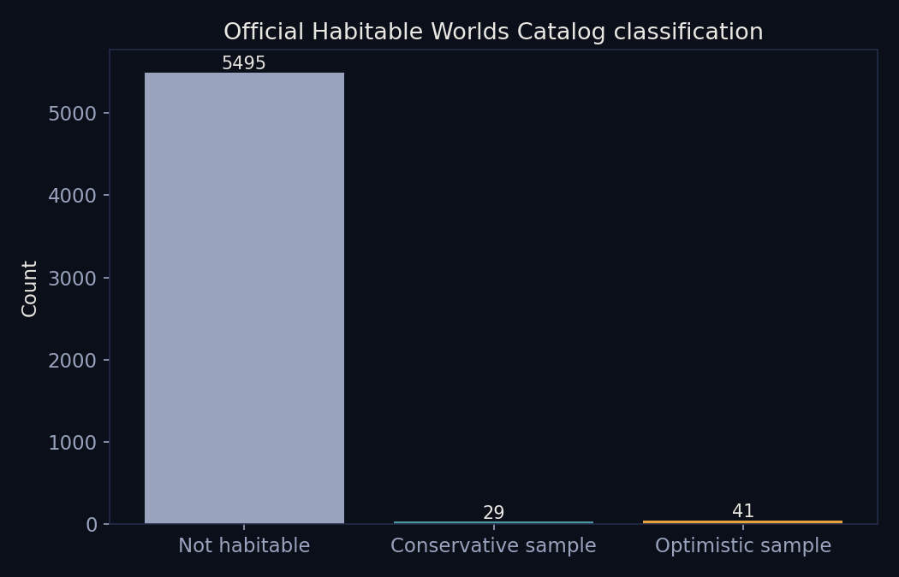
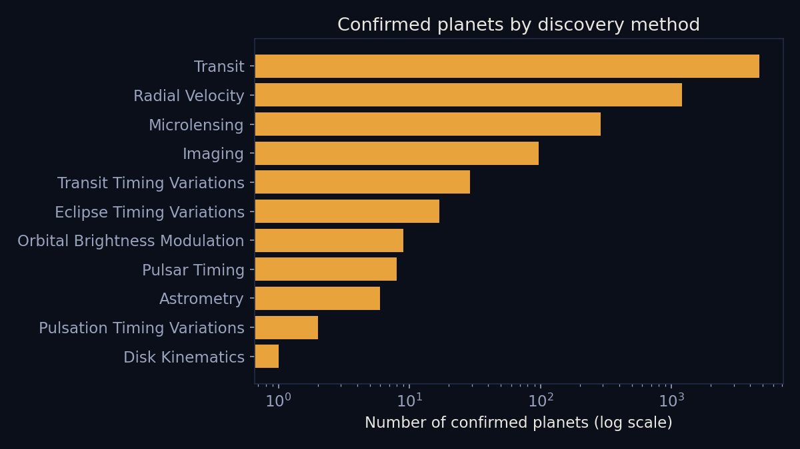
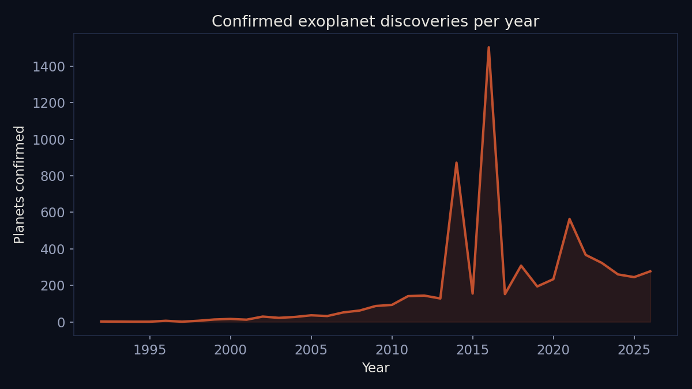
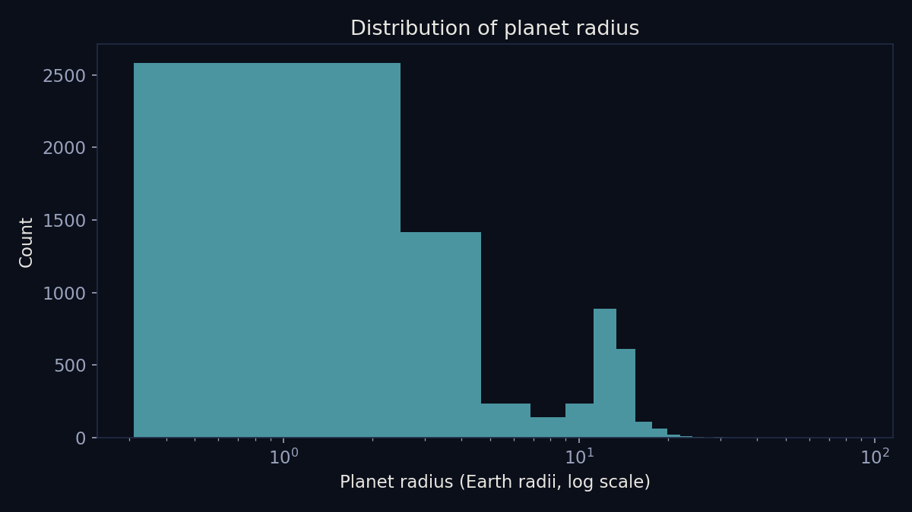
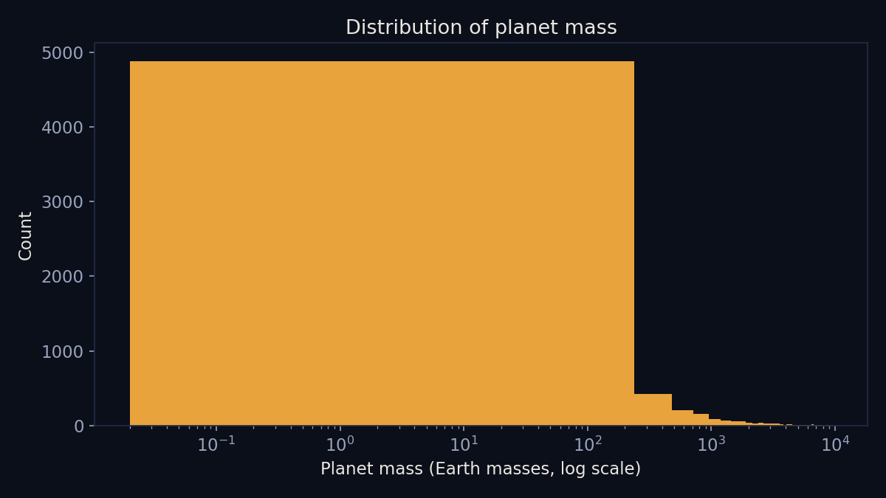
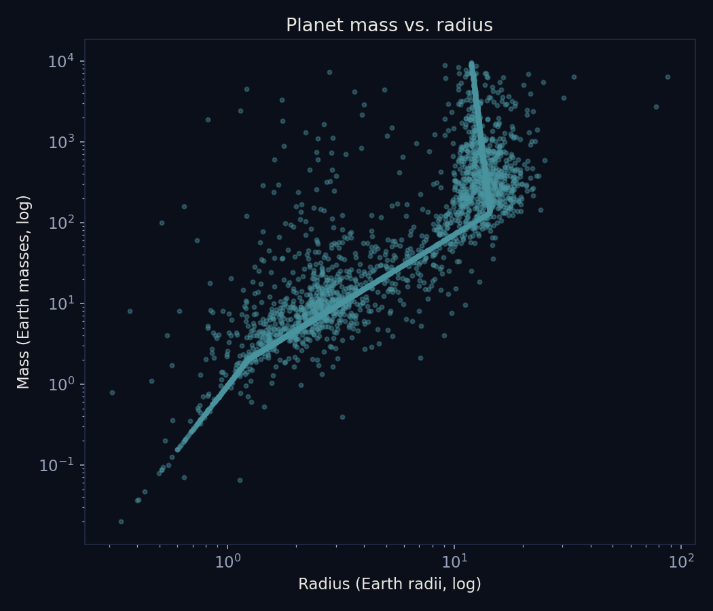
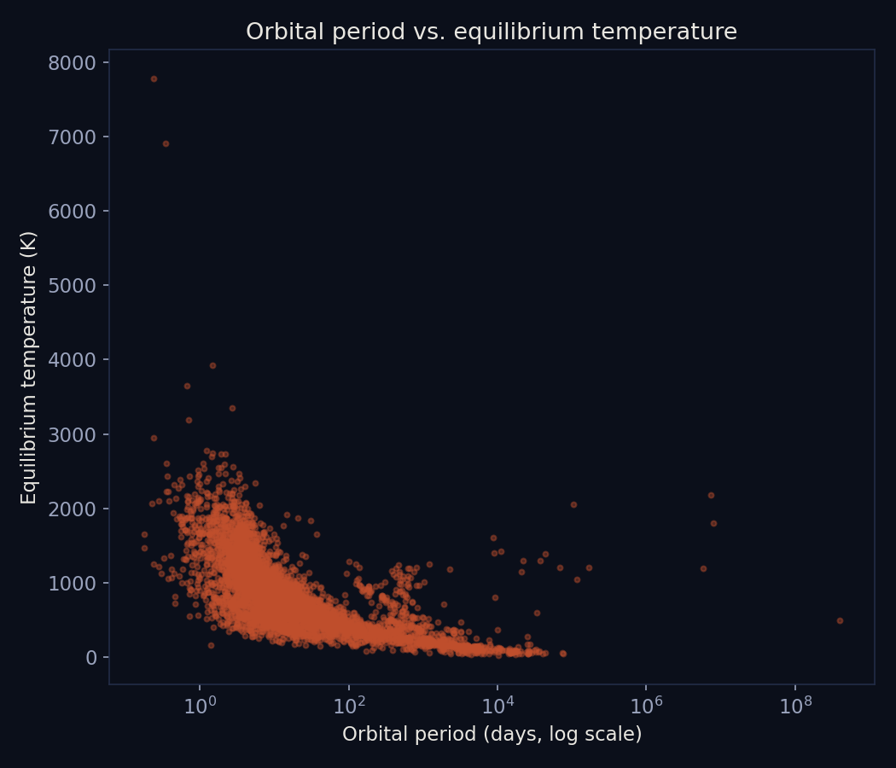
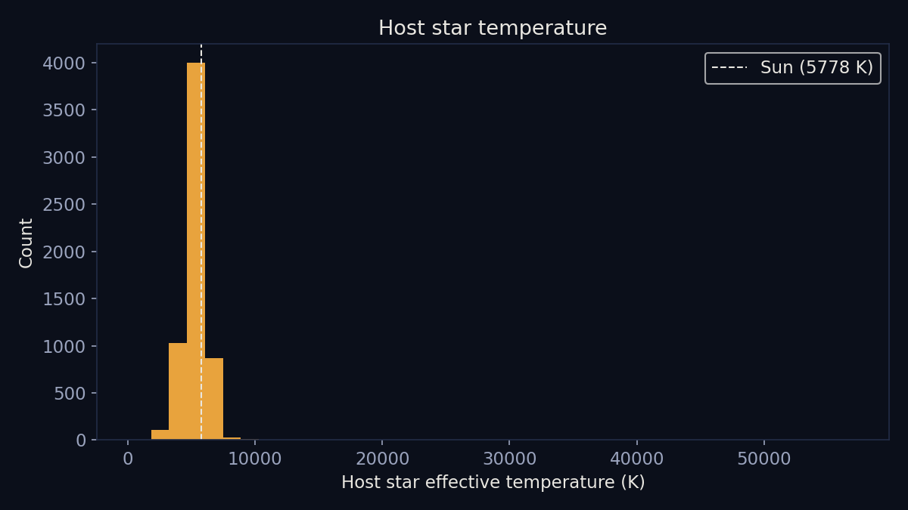
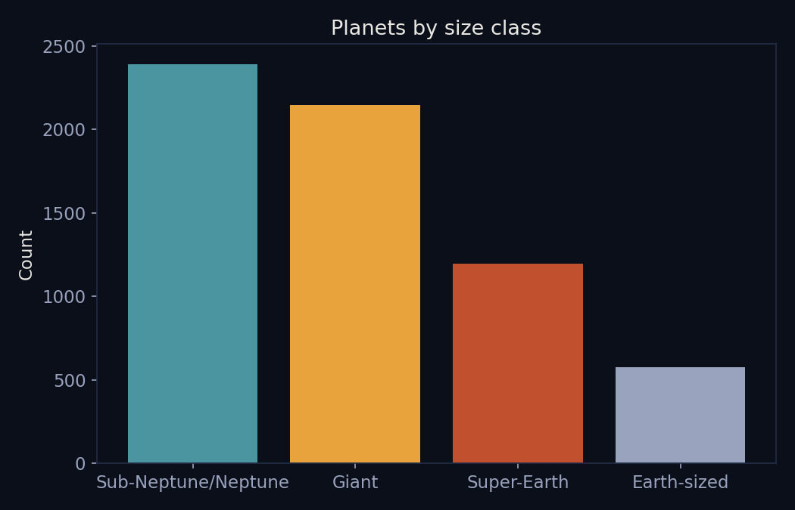
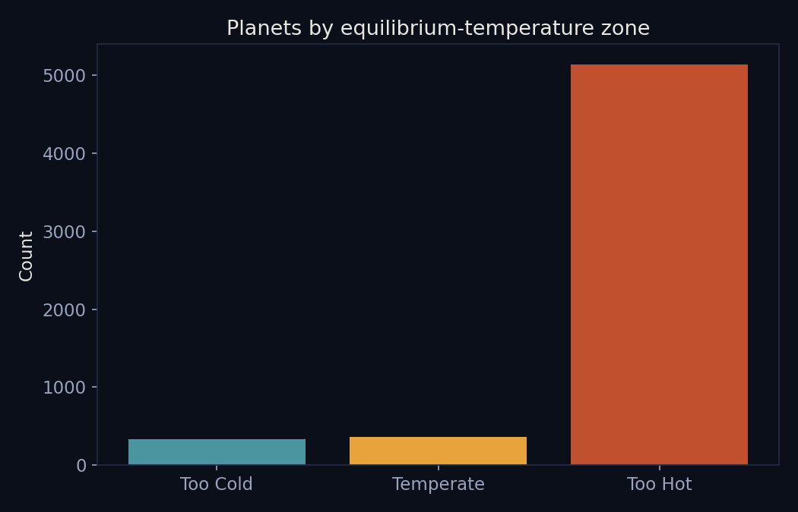

Eleven views into the cleaned, merged dataset of 6,366 confirmed exoplanets, covering how the data was collected, what kinds of planets and stars show up most, and where the temperate, potentially habitable candidates sit within that population. Visualization code: clean_and_visualize.py (Python, uses matplotlib).

Only 70 of the 5,565 matched planets carry any official habitable classification at all, underscoring just how rare a strong habitability candidate still is, even after thousands of confirmed discoveries.

The transit method accounts for the large majority of confirmed planets, which biases the known population toward planets that happen to cross in front of their star as seen from Earth.

Confirmed discoveries jump sharply after 2009 and again after 2014, tracking the Kepler and K2/TESS missions rather than any change in how many planets actually exist.

Most confirmed planets are smaller than Neptune, with a large cluster only a few times Earth's radius.

Planet mass spans more than five orders of magnitude, from bodies lighter than Mercury to objects bordering on brown dwarfs.

Mass and radius track closely for smaller planets but scatter widely above roughly ten Earth radii, where gas giants of very different densities overlap.

Equilibrium temperature falls off sharply as orbital period increases, consistent with planets further from their star receiving less energy from it.

Most confirmed planets orbit stars cooler than the Sun, reflecting both how common cooler stars are and which stars current methods find planets around most easily.Equilibrium temperature and stellar radius are the columns most often missing, a gap carried over from Data Gathering and documented rather than filled in.

Sub-Neptune and Neptune-sized planets, a size class with no counterpart in the Solar System, form the single largest group of confirmed exoplanets.

The great majority of confirmed planets are too hot for liquid water under this simple estimate, and only a small fraction fall in the temperate zone this project is most interested in.